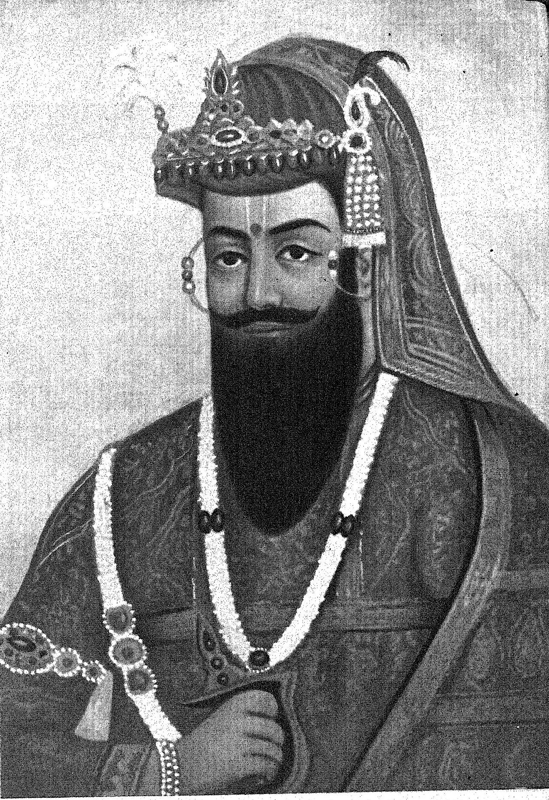

Nana Saheb

Born: 19 May 1824, Bithoor
Full name: Dhondu Pant
Died: 1859, Naimisha Forest
Disappeared: July 1857 in Cawnpore (now Kanpur), British India
Famously known as Nana Sahib
Balajirao Bhat, commonly known as Nana Sahib, was born in Bithoor (Kanpur District), Uttar
Pradesh in May 1824. He was the eighth Peshwa of India's Maratha Empire. Balaji Bajirao was
another name for him. When Chattrapati Shahu died in 1749, he left the Maratha Empire to the
Peshwas. He did not have an heir to his realm, therefore he nominated the valiant Peshwas as
his heir. Nana Sahib, as king of the Maratha Empire, made significant contributions to the
development of Pune. During his rule, Poona was transformed from a small village to a
metropolis. He redesigned the city by constructing new districts, temples, and bridges. Having
said that, Sahib was a key contributor to the 1857 revolt, leading a group of enthusiastic rebels.
He overran the British soldiers in Kanpur and endangered the British camp by murdering the
survivors. However, after defeating Nana Saheb and his men, the British were able to retake
Kanpur.
Who was Nana SahebNana Saheb Peshwa II, also known as Dhondu Pant, was an Indian Peshwa of the Maratha empire,
nobleman, and combatant who led the Kanpur (Cawnpore) uprising during the Great Revolt of 1857.
Nana Saheb thought he was entitled to a pension from the East India Company as the adopted son of the exiled
Maratha Peshwa Baji Rao II, but the underlying contractual issues are complex. He joined the rebellion as a
result of the Company's failure to continue his father's pension after his death, as well as what he
saw as oppressive regulations. He forced the British military at Kanpur to surrender, then slaughtered the survivors,
capturing Kanpur for a few days.
The East India Company had banished Peshwa Baji Rao II to Bithoor (near Kanpur) after the Maratha defeat in the
Third Maratha War, where he maintained a huge establishment supported in part by a British pension.
The British, however, denied Nana's standing as a “Peshwa,” and therefore the annuity was cancelled.
As a result, Nana rose up against the British and began assembling a band of soldiers. During the 1857 uprising in
Cawnpore (Kanpur), he led the “sepoys” (British-employed Indian soldiers)
and successfully forced the British entrenchment to surrender.
Nana eventually took control of the city. A later massacre at the Satichaura Ghat, however, flipped the tables.
Nana's forces were attacked by the British. Nana, along with his family, fled to Nepal after his army was defeated.